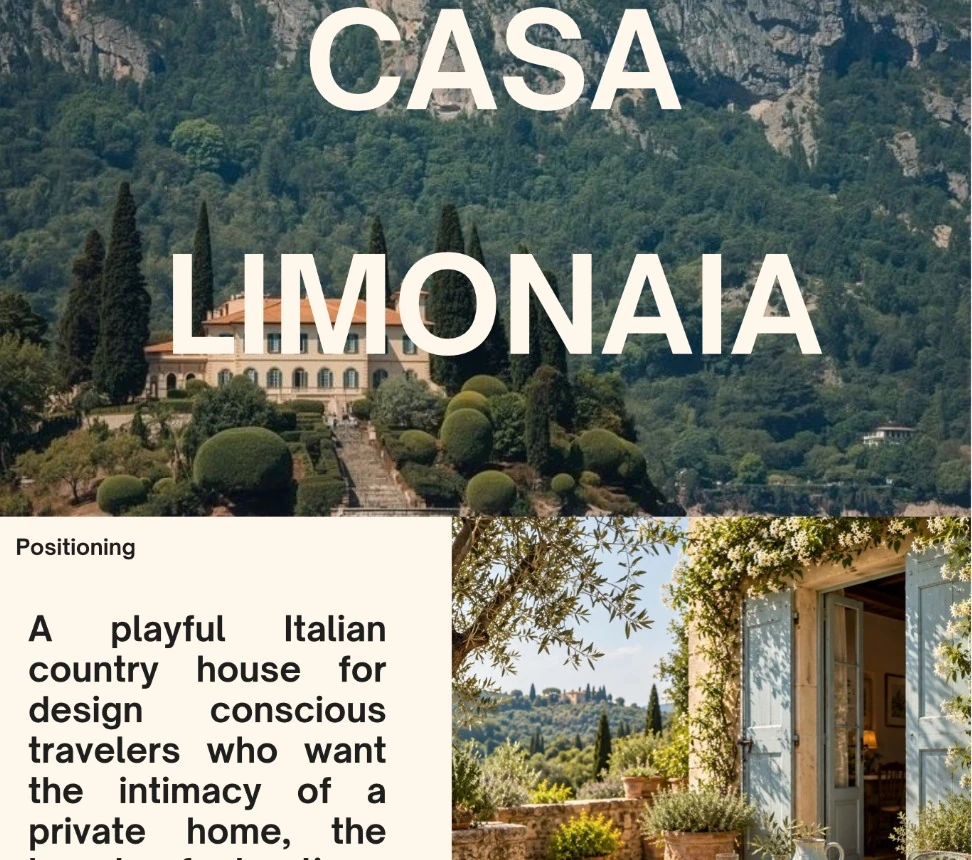
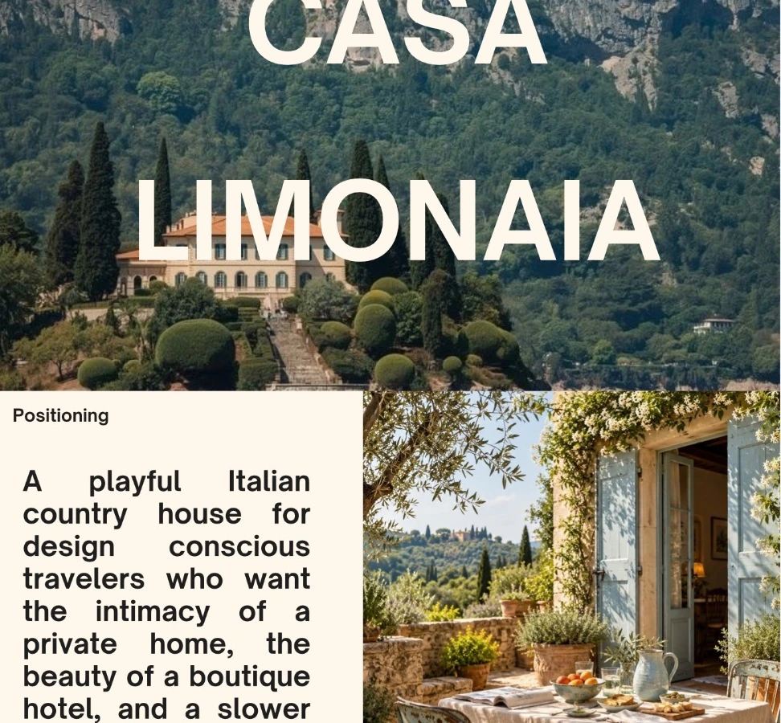
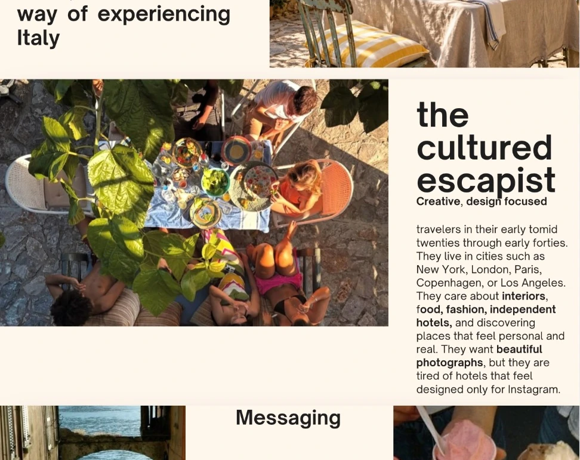
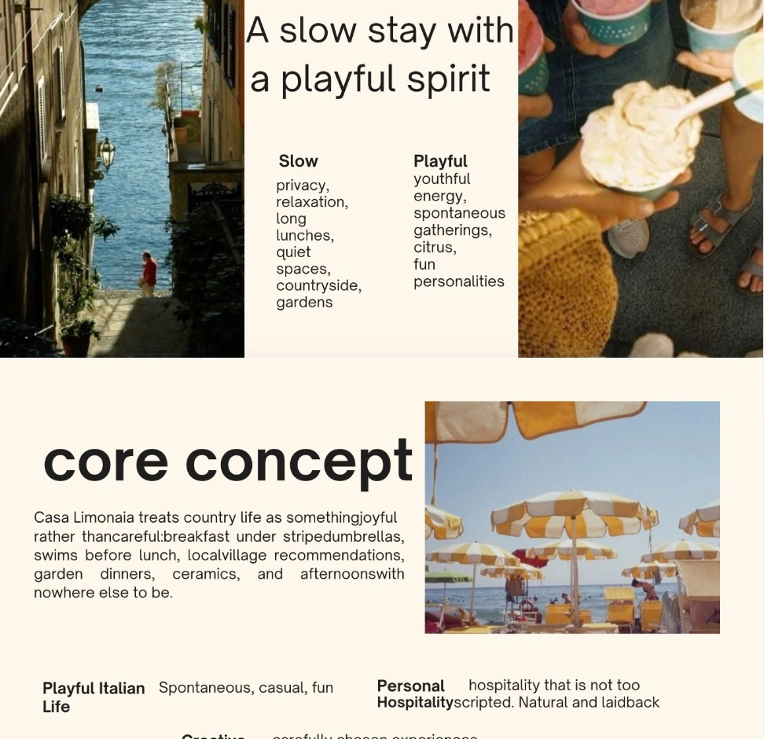
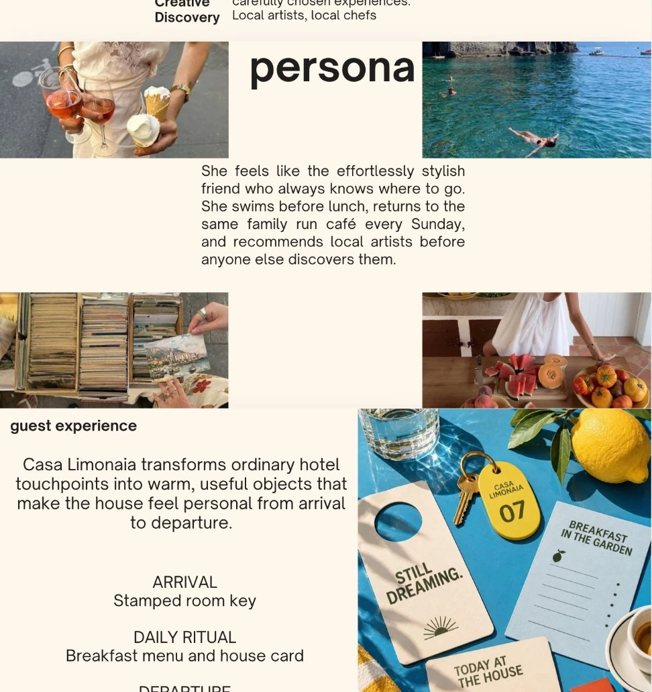
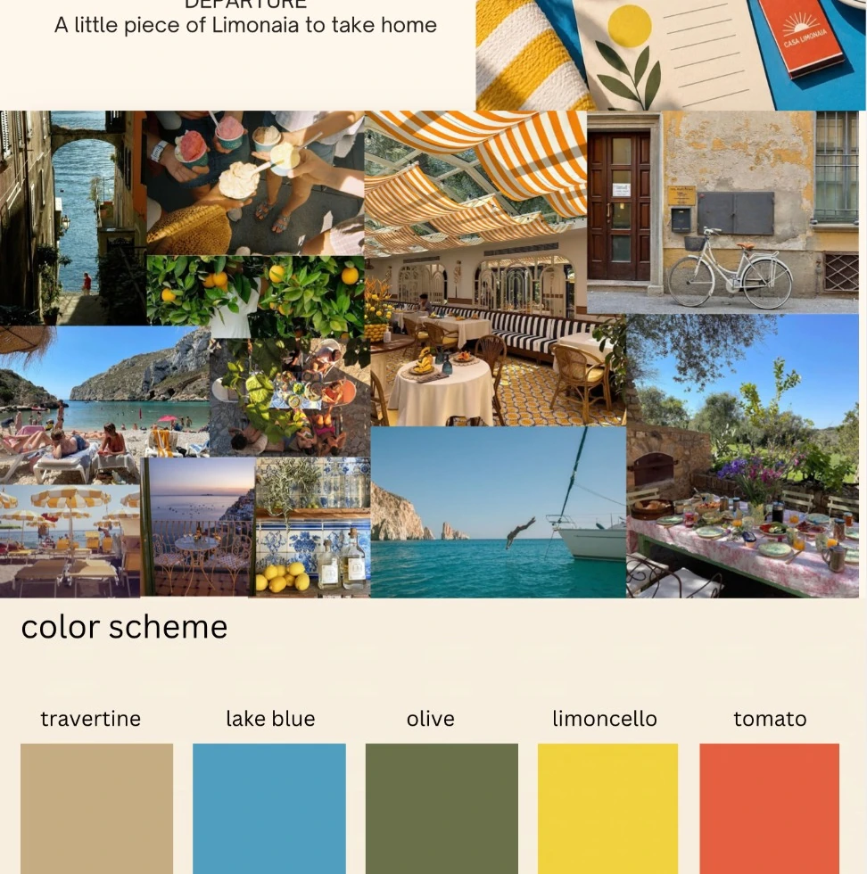
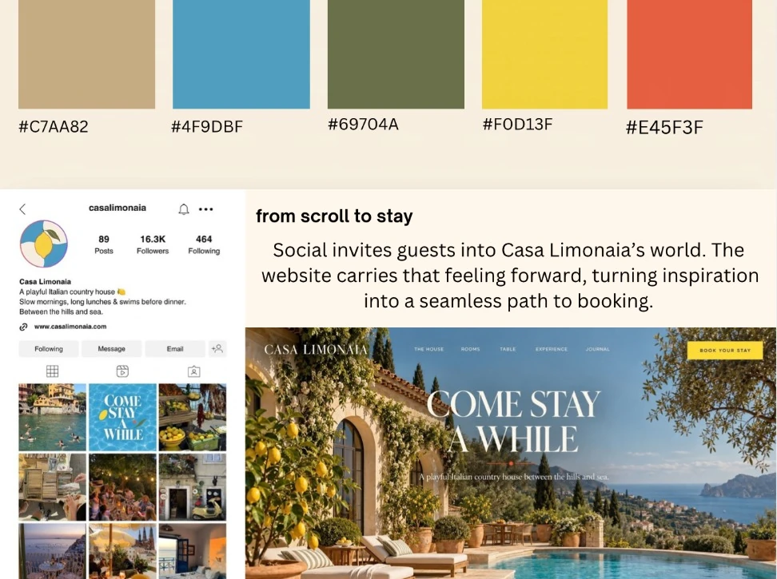

Self-initiated concept · 2026
Casa Limonaia
A slow stay with a playful spirit.

THE IDEABehind
Behind
the work.
Casa Limonaia is a fictional Italian countryside hideaway for design-conscious travelers. I imagined the kind of place where slow mornings, local artists, playful color, and small rituals come together. Its story moves from audience and positioning through physical guest touchpoints and finally into the digital experience.
Brand positioning and audience persona
Concept narrative and messaging
Moodboards and color palette
Guest journey and meaningful touchpoints
Website and social media concepts
Creative references for the experience
SELECTED VISUALS
Inside the project.
Scroll through the original creative portfolio, displayed as one continuous editorial spread.





